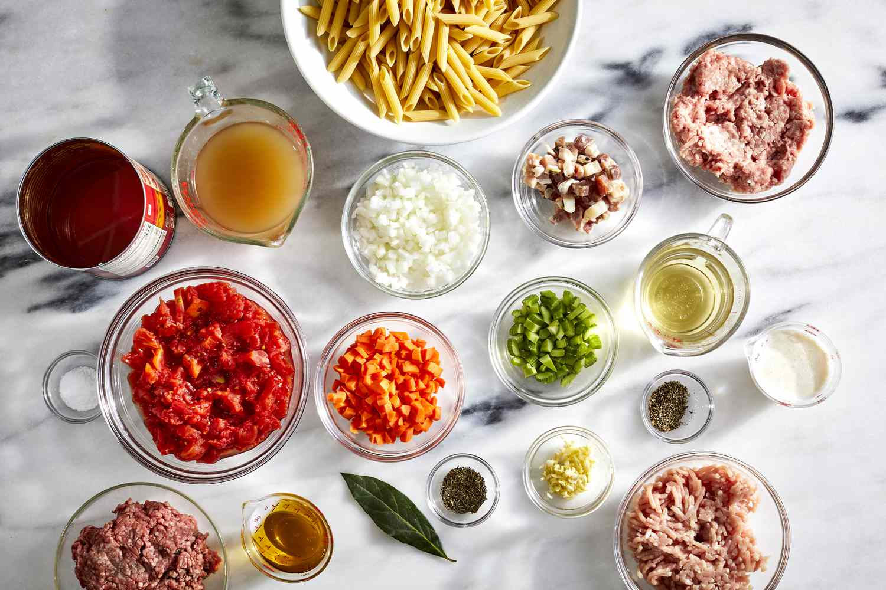

Spaghetti Bolognese
A classic Italian pasta dish that’s rich, flavorful, and perfect
for a family dinner.
Recipe Information
Preparation Time: 15 minutes
Cooking Time: 45 minutes
Servings: 4
Difficulty: Intermediate
Ingredients
- 200g spaghetti
- 300g minced beef
- 2 cloves garlic, minced
- 1 onion, chopped
- 400g canned tomatoes
- 2 tbsp olive oil
- Salt and pepper to taste
Instructions
-
Heat olive oil in a pan and sauté onions and garlic until fragrant.
- Add minced beef and cook until browned.
-
Pour in canned tomatoes, season with salt and pepper, and simmer for 30
minutes.
- In another pot, cook spaghetti according to package instructions.
- Serve spaghetti topped with the Bolognese sauce.
Tips
For extra flavor, add a splash of red wine to the sauce
before simmering.

Original recipe source:
Simply Recipes
Nutrition Facts (per serving)
- Calories: 450
- Protein: 20g
- Carbohydrates: 55g
- Fat: 15g
- Fiber: 6g

Fresh ingredients ready for cooking.